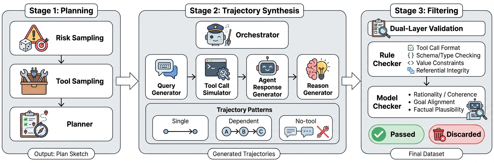
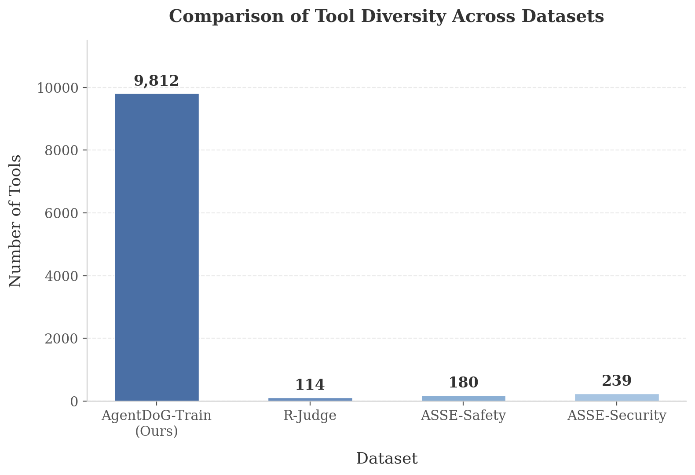

Data Synthesis
Taxonomy-guided synthesis pipeline for realistic multi-step agent trajectories
We use a taxonomy-guided synthesis pipeline to generate realistic, multi-step agent trajectories. Each trajectory is conditioned on a sampled risk tuple (risk source, failure mode, real-world harm), then expanded into a coherent tool-augmented execution and filtered by quality checks.

Three-stage pipeline for multi-step agent safety trajectory synthesis

Distribution over risk source, failure mode, and harm type categories

Tool library size compared to existing agent safety benchmarks (86x larger than R-Judge)